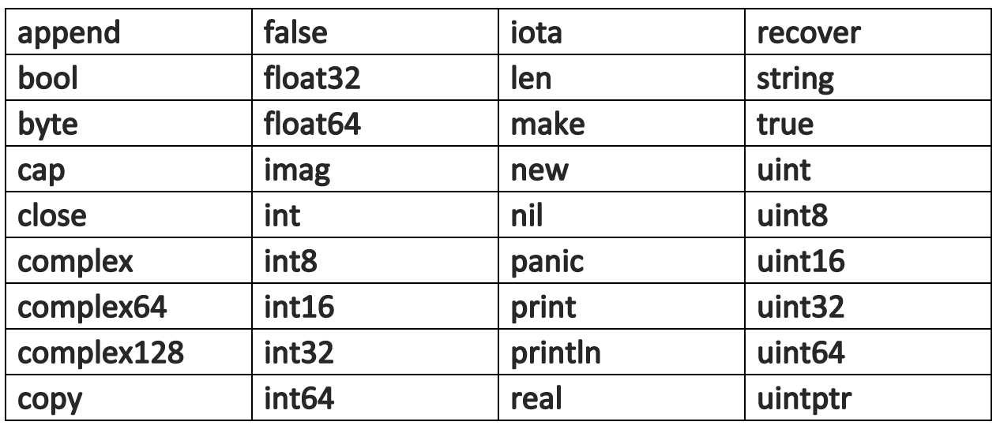

Go 源码文件命名规范
Go 源代码文件以.go后缀名结尾，文件名通常为英文小写字母组合，文件名过长则通常使用下划线_作为英文单词之间的分隔符，Go 源码文件名不能包含空白符、特殊字符。
Go 关键字
Go 被开发团队期望设计为一门简单易懂的语言，目前 Go 关键字只有 25 个，具体如下。
图：Go 关键字
Go 预定义标识符
除了 25 枚关键字外，Go 还设置了一些预定义标识符，包含变量类型标示符，预置的基本函数等。

图：Go 预定义标识符
Go 数据类型
Go 是一门静态强类型语言，这意味着编译器需要在编译时刻知晓程序中所有变量的数据类型，并针对不同数据类型的变量操作做合法性检查。下表对 Go 中的变量数据类型做了一个简单归类。
| 数据类型 | 举例说明 |
|---|---|
| 原始类型 | int、float、bool、string |
| 组合类型 | struct、array、slice、map、channel |
| 接口类型 | interface{} |
| 指针类型 | *type |
表：Go 数据类型
Go 变量
变量在程序运行期间其值可以被改变。在 Go 中声明变量使用var关键字：
var identifier type
代码清单：Go 声明变量
以var关键字开头，identifier是变量名，变量类型type跟在变量名的后头。当一个变量被声明时，变量的内存空间即被被初始化，该变量带有默认零值：整型0，浮点型0.0，布尔型false，字符串型""，指针nil，空结构体…
注：Go 变量命名规范遵循驼峰命名法（camelCase），变量导出首字母大写。
变量赋值
将一个值赋予一个变量的操作被称为变量赋值。在 Go 中变量赋值使用=操作符：
var n type = v1
n = v2
代码清单：Go 变量赋值
短变量声明 := 操作符
Go 语言编译器足够智能，可以自动推导变量类型。在应用自动类型推导的情况下，原先变量声明赋值的写法就显得有些冗余了，因此 Go 提供了一种简洁的变量声明赋值写法：即:=操作符，关键字var与变量类型type都可以被忽略掉。
identifier := value
代码清单：Go 短变量声明
注意，Go 的短变量声明写法:=只能在函数体（Function）内使用。
变量作用域
Go 中存在两种变量变量作用域：
- 全局作用域（Global Scope）
- 本地作用域（Local Scope）
声明在顶层，函数体之外的变量应用全局作用域。全局作用域内的变量为其包内所有所有源文件可见可用，全局作用域也被称为包作用域（Package Scope）。
声明在函数体内部的变量应用本地作用域。本地作用域内的变量只在当前函数体内可用。
Go 的作用域规则与 C/C++ 相似，在内层作用域可以访问并修改外层作用域的变量，反之则不行，在内层作用域声明同名变量会覆盖外层作用域变量（Variable Shadowing）。
变量作用域代码实例
观察以下 Go 程序代码，判读结果。
package main
import "fmt"
var v int = 0
func main() {
f1()
f2()
f1()
}
func f1() {
print(v)
}
func f2() {
v := 1
print(v)
}
func print(v int) {
fmt.Print(v)
}
代码清单：Go 变量作用域代码实例
Go 常量
在程序运行期间值不可被改变的量被称为常量。在 Go 中常量使用const关键字，且能被用作常量的数据类型只能是布尔型、整型、浮点型、字符串。
注：常量命名规范推荐遵循全大写字母并以下划线
_分隔。
const identifier type = value
代码清单：Go 常量
参考资料
A Tour of Go
Book:《The Way to Go》